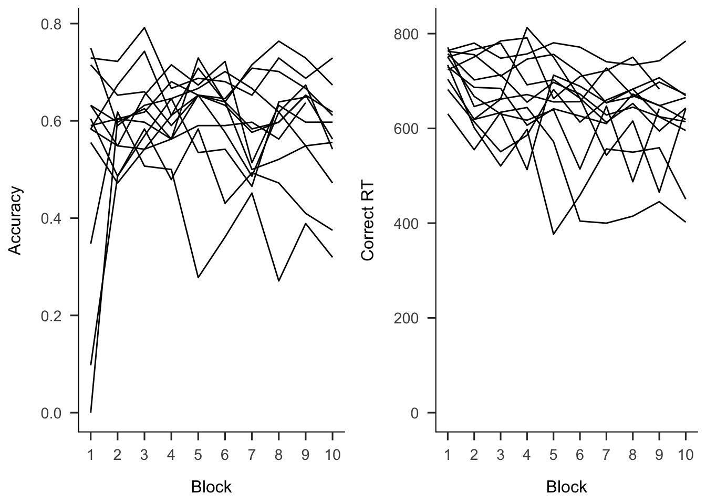
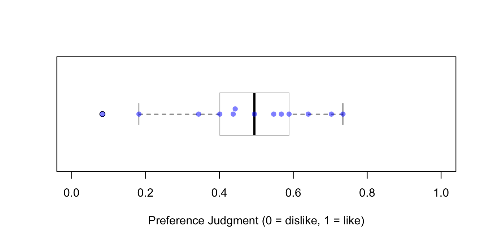
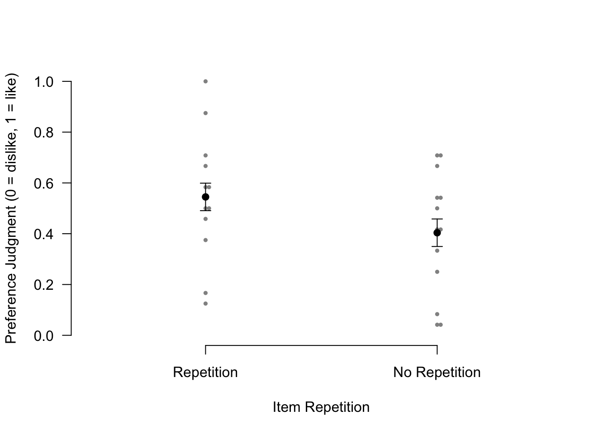
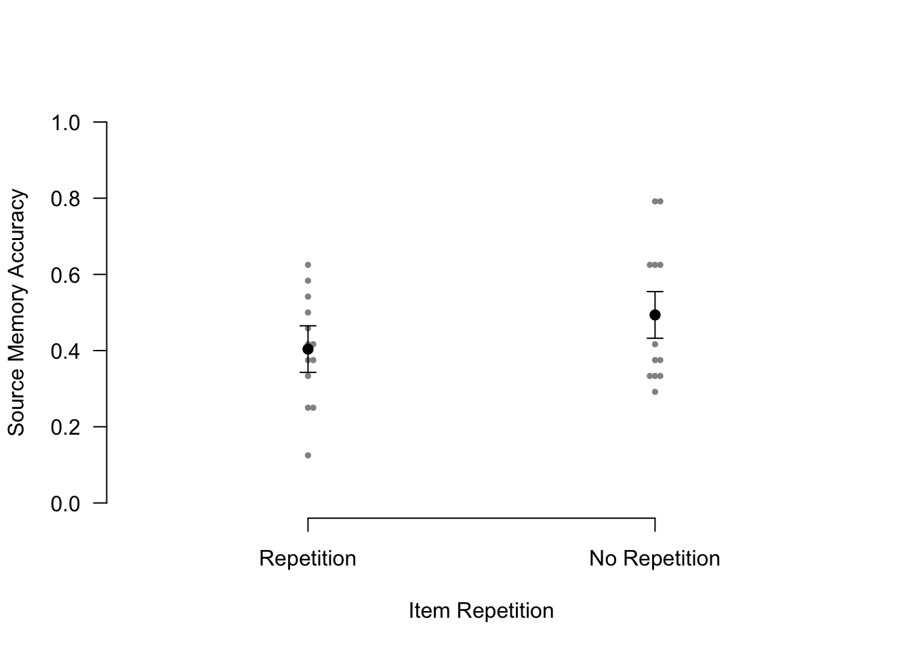
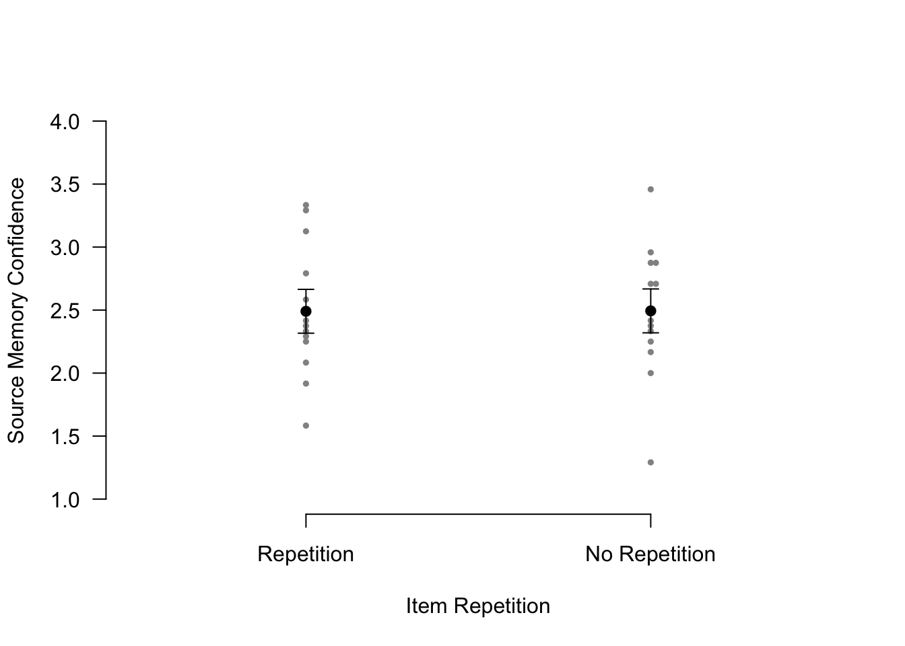
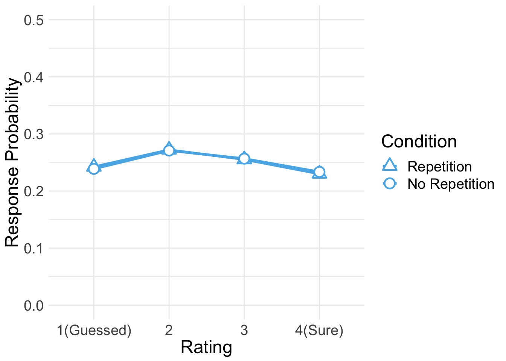
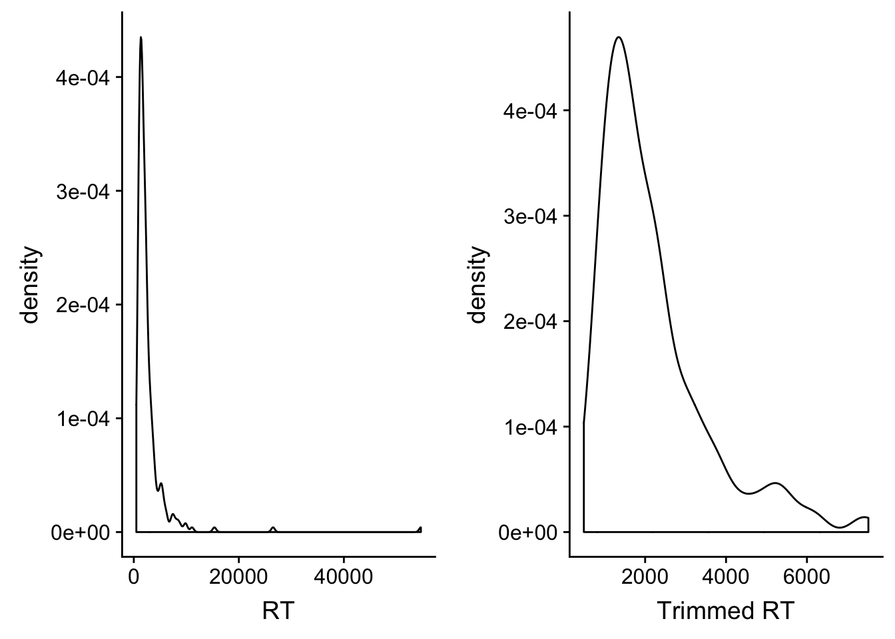
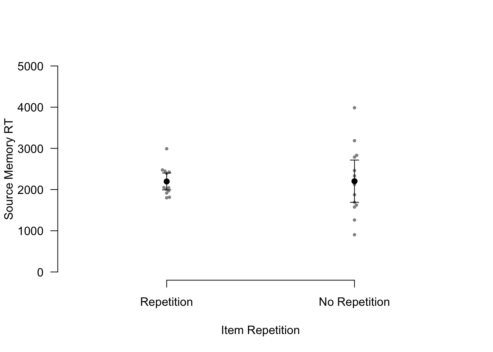

Thirteen participants were pre-familiarized with 48 pseudowords. Participants completed a total of 1,440 trials, divided into 10 blocks of 144 trials each. Each item was repeated three times within a block. Thus, participants were exposed to each item 30 times in total. In each trial, participants indicated whether it was the first, second, or third time the given item was presented within the block.
To analyze the data, some packages need to be loaded. We use pacman as a package manager, which takes care of the other packages.
if (!require("pacman", quietly = TRUE)) install.packages("pacman")
pacman::p_load(tidyverse, knitr, beeswarm, car, afex, emmeans, cowplot)
pacman::p_load_gh("crsh/papaja")The sum-to-zero coding scheme was used whenever (g)lmer was invoked or the type III tests were calculated (Singmann & Kellen, in press).
afex::set_sum_contrasts()EE <- read.csv("data/data_NovSM_Exp3Word_PRE.csv", header = T)
glimpse(EE, width=70)## Observations: 18,309
## Variables: 8
## $ SID <int> 1, 1, 1, 1, 1, 1, 1, 1, 1, 1, 1, 1, 1, 1, 1, 1, 1, …
## $ Block <int> 1, 1, 1, 1, 1, 1, 1, 1, 1, 1, 1, 1, 1, 1, 1, 1, 1, …
## $ Trial <int> 1, 2, 3, 4, 5, 6, 7, 8, 9, 10, 11, 12, 13, 14, 15, …
## $ RepTime <int> 1, 1, 1, 1, 1, 1, 1, 1, 1, 1, 1, 1, 2, 1, 1, 2, 1, …
## $ Resp <int> 1, 0, 1, 1, 1, 1, 1, 1, 1, 1, 1, 1, 2, 2, 1, 2, 1, …
## $ Corr <int> 1, 0, 1, 1, 1, 1, 1, 1, 1, 1, 1, 1, 1, 0, 1, 1, 1, …
## $ RT <dbl> 1119.89, 0.00, 56.97, 742.86, 580.71, 498.61, 424.4…
## $ ImgName <fct> nonwex6.png, nonwin2_11.png, nonwex12.png, nonwin2_…Two participants (5th & 6th) did not complete the session due to a technical issue.
table(EE$SID)##
## 1 2 3 4 5 6 7 8 9 10 11 12 13
## 1440 1440 1440 1440 1243 1226 1440 1440 1440 1440 1440 1440 1440data <- EE %>% group_by(SID, Block) %>%
summarise(Accuracy = mean(Corr)) %>%
ungroup()
h1 <- ggplot(data, aes(x=Block, y=Accuracy, group=SID)) +
geom_line() +
scale_x_continuous(breaks=seq(1,10,1)) +
# scale_y_continuous(limits=c(0, 1)) +
theme_apa()
data <- EE %>% filter(Corr == 1) %>%
group_by(SID, Block) %>%
summarise(RT = mean(RT)) %>%
ungroup()
h2 <- ggplot(data, aes(x=Block, y=RT, group=SID)) +
geom_line() +
scale_x_continuous(breaks=seq(1,10,1)) +
expand_limits(y=0) +
labs(y = "Correct RT") +
theme_apa()
plot_grid(h1, h2)
Two participants (6th & 7th) did not make responses in all or most of trials in Block 1. In subsequent blocks, participants made faster correct responses while maintaining a similar level of accuracy. Overall accuracy was 59.43%.
Twenty four pseudowords were repeated eight times, producing 192 trials. In each trial, participants made a preference judgment for an item.
RR <- read.csv("data/data_NovSM_Exp3Word_REP.csv", header = T)
RR$Pref <- ifelse(RR$Resp==1,1,0)
glimpse(RR, width=70)## Observations: 2,496
## Variables: 8
## $ SID <int> 1, 1, 1, 1, 1, 1, 1, 1, 1, 1, 1, 1, 1, 1, 1, 1, 1, …
## $ RepTime <int> 1, 1, 1, 1, 1, 1, 1, 1, 1, 1, 1, 1, 1, 1, 1, 1, 1, …
## $ Trial <int> 1, 2, 3, 4, 5, 6, 7, 8, 9, 10, 11, 12, 13, 14, 15, …
## $ Resp <int> 2, 2, 2, 2, 2, 2, 2, 2, 2, 1, 2, 2, 2, 2, 2, 2, 1, …
## $ Corr <int> 1, 1, 1, 1, 1, 1, 1, 1, 1, 1, 1, 1, 1, 1, 1, 1, 1, …
## $ RT <dbl> 1226.19, 752.28, 673.00, 745.71, 634.42, 667.20, 69…
## $ ImgName <fct> nonwin2_8.png, nonwin2_4.png, nonwex4.png, nonwex2_…
## $ Pref <dbl> 0, 0, 0, 0, 0, 0, 0, 0, 0, 1, 0, 0, 0, 0, 0, 0, 1, …table(RR$SID)##
## 1 2 3 4 5 6 7 8 9 10 11 12 13
## 192 192 192 192 192 192 192 192 192 192 192 192 192Participants did not make responses in 3.04% of trials.
1 - mean(RR$Corr)## [1] 0.03044872data <- RR %>% group_by(SID) %>%
summarise(Preference = mean(Pref)) %>%
ungroup
boxplot(data$Preference, horizontal = TRUE,
ylim = c(0,1), boxwex = .8, boxcol = "grey",
xlab = "Preference Judgment (0 = dislike, 1 = like)")
beeswarm(data$Preference, horizontal = TRUE, add = TRUE,
col = alpha("blue", 0.5), pch=16)
The mean preference was 47.44%.
Participants learned 48 pairs of a pseudoword and a quadrant on the screen. Half of pseudowords were those shown in the first phase. The other half were new. Participants were instructed to pay attention to the location of each pseudowords while making a preference judgment.
SS <- read.csv("data/data_NovSM_Exp3Word_SRC.csv", header = T)
SS$Repetition = factor(SS$Repetition, levels=c(1,2), labels=c("Repetition","No Repetition"))
SS$Pref <- ifelse(SS$Resp==1,1,0)
glimpse(SS, width=70)## Observations: 624
## Variables: 9
## $ SID <int> 1, 1, 1, 1, 1, 1, 1, 1, 1, 1, 1, 1, 1, 1, 1, 1, …
## $ Trial <int> 1, 2, 3, 4, 5, 6, 7, 8, 9, 10, 11, 12, 13, 14, 1…
## $ Repetition <fct> Repetition, No Repetition, Repetition, No Repeti…
## $ Loc <int> 4, 4, 2, 1, 2, 2, 4, 2, 1, 3, 2, 1, 4, 1, 3, 2, …
## $ Resp <int> 1, 1, 1, 1, 1, 1, 1, 2, 1, 1, 2, 1, 1, 1, 1, 1, …
## $ Corr <int> 1, 1, 1, 1, 1, 1, 1, 1, 1, 1, 1, 1, 1, 1, 1, 1, …
## $ RT <dbl> 1664.67, 1228.73, 1697.13, 1421.39, 1449.71, 122…
## $ ImgName <fct> nonwex6.png, nonwex2_4.png, nonwex3.png, nonwin2…
## $ Pref <dbl> 1, 1, 1, 1, 1, 1, 1, 0, 1, 1, 0, 1, 1, 1, 1, 1, …The within-participant item repetition was the single factor in Experiment 3B. Participants had 24 repetition trials and 24 no repetition trials.
table(SS$Repetition, SS$SID)##
## 1 2 3 4 5 6 7 8 9 10 11 12 13
## Repetition 24 24 24 24 24 24 24 24 24 24 24 24 24
## No Repetition 24 24 24 24 24 24 24 24 24 24 24 24 24Participants did not make responses in 2.72% of trials.
1 - mean(SS$Corr)## [1] 0.02724359As in Experiment 2, preference for pseudowords increased after repetition.
apa_beeplot(data = SS,
id="SID", dv="Pref", factors=c("Repetition"),
dispersion = within_subjects_conf_int,
ylim = c(0, 1),
xlab = "Item Repetition",
ylab = "Preference Judgment (0 = dislike, 1 = like)",
las=1)
SS %>% group_by(SID, Repetition) %>%
summarise(Preference = mean(Pref)) %>%
ungroup %>%
group_by(Repetition) %>%
summarise(meanAcc = mean(Preference), ciAcc = ci(Preference)) %>%
ungroup %>%
kable()| Repetition | meanAcc | ciAcc |
|---|---|---|
| Repetition | 0.5448718 | 0.1480574 |
| No Repetition | 0.4038462 | 0.1455102 |
ss.aov <- aov_ez(id = "SID", dv = "Pref", data = SS, within = "Repetition")
anova(ss.aov, es = "pes") %>% kable(digits = 4)| num Df | den Df | MSE | F | pes | Pr(>F) | |
|---|---|---|---|---|---|---|
| Repetition | 1 | 12 | 0.008 | 16.0886 | 0.5728 | 0.0017 |
Participants preferred the pseudowords of the repetition condition significantly to those of the no repetition condition (familiarity benefit).
The full model (ss.m1) included a fixed effect (item repetition). The model was maximal in that it included both by-participant and by-item random intercepts, and by-participant random slopes for item repetition (Barr, Levy, Scheepers, & Tily, 2013).
To fit the models, we used the mixed() of the afex package (Singmann, Bolker, & Westfall, 2017) which was built on the lmer() of the lme4 package (Bates, Maechler, Bolker, & Walker, 2015). The mixed() assessed the statistical significance of fixed effects by comparing a model with the effect in question against its nested model which lacked the effect in question. P-values of the effects were obtained by both likelihood ratio tests.
pacman::p_load(parallel)
(nc <- detectCores())
cl <- makeCluster(rep("localhost", nc))
ss.m1 <- mixed(Pref ~ Repetition + (Repetition|SID) + (1|ImgName),
SS, method = "LRT", cl = cl,
family=binomial(link="logit"),
control = glmerControl(optCtrl = list(maxfun = 1e6)))
stopCluster(cl)kable(anova(ss.m1))| Df | Chisq | Chi Df | Pr(>Chisq) | |
|---|---|---|---|---|
| Repetition | 5 | 10.16475 | 1 | 0.0014315 |
The result is consistent with those from the ANOVA.
In each trial, participants first indicated in which quadrant a given pseudoword appeared during the item-source association phase. Participants then rated how confident they were about their memory judgment.
WW <- read.csv("data/data_NovSM_Exp3Word_TST.csv", header = T)
WW$Repetition = factor(WW$Repetition, levels=c(1,2), labels=c("Repetition","No Repetition"))
glimpse(WW, width=70)## Observations: 624
## Variables: 9
## $ SID <int> 1, 1, 1, 1, 1, 1, 1, 1, 1, 1, 1, 1, 1, 1, 1, 1, …
## $ Trial <int> 1, 2, 3, 4, 5, 6, 7, 8, 9, 10, 11, 12, 13, 14, 1…
## $ Repetition <fct> No Repetition, Repetition, No Repetition, No Rep…
## $ AscLoc <int> 2, 4, 4, 1, 3, 4, 4, 1, 2, 1, 2, 4, 4, 4, 3, 1, …
## $ ScrResp <int> 2, 1, 4, 1, 3, 4, 4, 1, 2, 1, 1, 1, 4, 4, 4, 3, …
## $ Corr <int> 1, 0, 1, 1, 1, 1, 1, 1, 1, 1, 0, 0, 1, 1, 0, 0, …
## $ RT <dbl> 2144.57, 6669.51, 1793.32, 1672.23, 1580.44, 132…
## $ Confident <int> 4, 1, 4, 4, 4, 4, 4, 2, 1, 4, 1, 1, 4, 4, 1, 1, …
## $ ImgName <fct> nonwex2_2.png, nonwin2.png, nonwex12.png, nonwex…The design was the same as that in the second phase. A single factor was the within-participant item repetition (repetition vs. no repetition).
table(WW$Repetition, WW$SID)##
## 1 2 3 4 5 6 7 8 9 10 11 12 13
## Repetition 24 24 24 24 24 24 24 24 24 24 24 24 24
## No Repetition 24 24 24 24 24 24 24 24 24 24 24 24 24apa_beeplot(data = WW,
id="SID", dv="Corr", factors="Repetition",
dispersion = within_subjects_conf_int,
ylim = c(0, 1),
xlab = "Item Repetition",
ylab = "Source Memory Accuracy",
las=1)
WW %>% group_by(SID, Repetition) %>%
summarise(Accuracy = mean(Corr)) %>%
ungroup %>%
group_by(Repetition) %>%
summarise(mean.Accuracy = mean(Accuracy), ci.Accuracy = ci(Accuracy)) %>%
ungroup %>%
kable()| Repetition | mean.Accuracy | ci.Accuracy |
|---|---|---|
| Repetition | 0.4038462 | 0.0862383 |
| No Repetition | 0.4935897 | 0.1077343 |
Source memory accuracy was greater in the no repetition condition than the repetition condition (novelty benefit).
ww.corr.aov <- aov_ez(id = "SID", dv = "Corr", data = WW, within = "Repetition")
anova(ww.corr.aov, es = "pes") %>% kable(digits = 4)| num Df | den Df | MSE | F | pes | Pr(>F) | |
|---|---|---|---|---|---|---|
| Repetition | 1 | 12 | 0.0102 | 5.1075 | 0.2986 | 0.0432 |
The source of unrepeated pseudowords was significantly better remembered than that of repeated pseudowords.
We built the full model (full1) with a fixed effect (item repetition). The model was maximal in that it included both by-participant and by-item random intercepts, and by-participant random slopes for item repetition (Barr, Levy, Scheepers, & Tily, 2013). In case the maximal model does not converge successfully, we built another model (full2) with the maximal random structure but with the correlations among the random terms removed (Singmann, 2018). P-values of the effects were obtained by both likelihood ratio tests and parametric bootstrap tests with 1,000 simulations.
pacman::p_load(parallel, optimx)
(nc <- detectCores())
cl <- makeCluster(rep("localhost", nc))
full1 <- mixed(Corr ~ Repetition + (Repetition|SID) + (1|ImgName),
WW, method = "LRT", cl = cl,
family=binomial(link="logit"),
control = glmerControl(optCtrl = list(maxfun = 1e6)))
full2 <- mixed(Corr ~ Repetition + (Repetition||SID) + (1|ImgName),
WW, method = "LRT", cl = cl,
family=binomial(link="logit"),
control = glmerControl(optCtrl = list(maxfun = 1e6)), expand_re = TRUE)
clusterEvalQ(cl, library(optimx))
full1pb <- mixed(Corr ~ Repetition + (Repetition|SID) + (1|ImgName),
WW, method = "PB", args_test = list(nsim = 1000, cl = cl),
cl = cl, family=binomial(link="logit"),
control = glmerControl(optCtrl = list(maxfun = 1e6)))
full2pb <- mixed(Corr ~ Repetition + (Repetition||SID) + (1|ImgName),
WW, method = "PB", args_test = list(nsim = 1000, cl = cl),
cl = cl, family=binomial(link="logit"),
control = glmerControl(optCtrl = list(maxfun = 1e6)), expand_re = TRUE)
stopCluster(cl)Here are the LRT results.
full.compare <- cbind(afex::nice(full1), afex::nice(full2)[,-c(1,2)])
colnames(full.compare)[c(3,4,5,6)] <- paste0(rep(c("full1_", "full2_"), each = 2),
colnames(full.compare)[c(3,4)])
full.compare %>% kable()| Effect | df | full1_Chisq | full1_p.value | full2_Chisq | full2_p.value |
|---|---|---|---|---|---|
| Repetition | 1 | 4.37 * | .04 | 4.68 * | .03 |
Here are the parametric bootstrap test results.
full.compare <- cbind(afex::nice(full1pb), afex::nice(full2pb)[,-c(1,2)])
colnames(full.compare)[c(3,4,5,6)] <- paste0(rep(c("full1pb_", "full2pb_"), each = 2),
colnames(full.compare)[c(3,4)])
full.compare %>% kable()| Effect | df | full1pb_Chisq | full1pb_p.value | full2pb_Chisq | full2pb_p.value |
|---|---|---|---|---|---|
| Repetition | 1 | 4.37 * | .04 | 4.68 * | .03 |
The p-values from all models agreed strongly providing a high degree of confidence in the results.
There was only negligible difference in confidence between the repetition vs. no repetition conditions.
apa_beeplot(data = WW,
id="SID", dv="Confident", factors="Repetition",
dispersion = within_subjects_conf_int,
ylim = c(1, 4),
xlab = "Item Repetition",
ylab = "Source Memory Confidence",
las=1)
WW %>% group_by(SID, Repetition) %>%
summarise(Confidence = mean(Confident)) %>%
ungroup %>%
group_by(Repetition) %>%
summarise(mean.Confidence = mean(Confidence), ci.Confidence = ci(Confidence)) %>%
ungroup %>%
kable()| Repetition | mean.Confidence | ci.Confidence |
|---|---|---|
| Repetition | 2.490385 | 0.3175196 |
| No Repetition | 2.493590 | 0.3230770 |
ww.conf.aov <- aov_ez(id = "SID", dv = "Confident", data = WW, within = "Repetition")
anova(ww.conf.aov, es = "pes") %>% kable(digits = 4)| num Df | den Df | MSE | F | pes | Pr(>F) | |
|---|---|---|---|---|---|---|
| Repetition | 1 | 12 | 0.083 | 8e-04 | 1e-04 | 0.9778 |
The effect of item repetition was not significant in confidence ratings.
The responses from a Likert-type scale are ordinal. Especially for the rating items with numerical response formats containing four or fewer categories, it is recommended to use categorical data analysis approaches, rather than treating the responses as continuous data (Harpe, 2015).
Here we employed the cumulative link mixed modeling using the clmm() of the package ordinal (Christensen, submitted). The model specification of fixed and random effects was the same as the mixed() above.
pacman::p_load(ordinal)
WW2 <- WW
WW2$Confident = factor(WW2$Confident, ordered = TRUE)
WW2$SID = factor(WW2$SID)
cm.full <- clmm(Confident ~ Repetition + (Repetition|SID) + (1|ImgName), data=WW2)
cm.red1 <- clmm(Confident ~ 1 + (Repetition|SID) + (1|ImgName), data=WW2) kable(anova(cm.full, cm.red1))| no.par | AIC | logLik | LR.stat | df | Pr(>Chisq) | |
|---|---|---|---|---|---|---|
| cm.red1 | 7 | 1657.994 | -821.9968 | |||
| cm.full | 8 | 1659.983 | -821.9917 | 0.0101447 | 1 | 0.919772 |
The effect of item repetition was not significant.
Below is the plot of estimated marginal means, which were extracted from the fitted CLMM. There was little difference between the repetition and no repetition conditions.
pacman::p_load(RVAideMemoire)
temp <- emmeans(cm.full,~Repetition|cut,mode="linear.predictor")
temp <- rating.emmeans(temp)
colnames(temp)[1] <- "Condition"
ggplot(data = temp, aes(x = Rating, y = Prob, group = Condition)) +
geom_line(aes(color = Condition), size = 1.2) +
geom_point(aes(shape = Condition, color = Condition),
size = 4, fill = "white", stroke = 1.2) +
scale_color_manual(values=c("#56B4E9", "#56B4E9")) +
scale_shape_manual(name="Condition", values=c(24,21)) +
labs(y = "Response Probability", x = "Rating") +
expand_limits(y=0) +
scale_y_continuous(limits = c(0, 0.5)) +
scale_x_discrete(labels = c("1" = "1(Guessed)","4"="4(Sure)")) +
theme_minimal() +
theme(text = element_text(size=18))
Only RTs in correct trials were analyzed. Before analysis, we first removed RTs either shorter than 200ms or longer than 10s. Then, from the RT distribution of each condition, RTs beyond 3 SD from the mean were removed.
cWW <- WW %>% filter(Corr==1)
sWW <- cWW %>% filter(RT > 200 & RT < 10000) %>%
group_by(Repetition) %>%
nest() %>%
mutate(lbound = map(data, ~mean(.$RT)-3*sd(.$RT)),
ubound = map(data, ~mean(.$RT)+3*sd(.$RT))) %>%
unnest(lbound, ubound) %>%
unnest(data) %>%
mutate(Outlier = (RT < lbound)|(RT > ubound)) %>%
filter(Outlier == FALSE) %>%
select(SID, Repetition, RT, ImgName)
100 - 100*nrow(sWW)/nrow(cWW)## [1] 3.928571This trimming procedure removed 3.93% of correct RTs.
Since the overall accuracy of source memory was not high, only small numbers of correct trials remained after trimming. None of participants had more than 20 valid trials.
sWW %>% group_by(SID, Repetition) %>%
summarise(NumTrial = length(RT)) %>%
ungroup %>%
group_by(Repetition) %>%
summarise(Avg = mean(NumTrial),
Med = median(NumTrial),
Min = min(NumTrial),
Max = max(NumTrial)) %>%
ungroup %>%
kable()| Repetition | Avg | Med | Min | Max |
|---|---|---|---|---|
| Repetition | 9.461538 | 10 | 3 | 15 |
| No Repetition | 11.230769 | 9 | 5 | 19 |
h1 <- ggplot(cWW, aes(x=RT)) + geom_density()
h2 <- ggplot(sWW, aes(x=RT)) + geom_density() + labs(x = "Trimmed RT")
pacman::p_load(cowplot)
plot_grid(h1, h2)
The overall RT distribution was highly skewed even after trimming.
apa_beeplot(data = sWW,
id="SID", dv="RT", factors="Repetition",
dispersion = conf_int,
ylim = c(0, 5000),
xlab = "Item Repetition",
ylab = "Source Memory RT",
las=1)
sWW %>% group_by(SID, Repetition) %>%
summarise(RT = mean(RT)) %>%
ungroup %>%
group_by(Repetition) %>%
summarise(mean.RT = mean(RT), ci.RT = ci(RT)) %>%
ungroup %>%
kable()| Repetition | mean.RT | ci.RT |
|---|---|---|
| Repetition | 2196.454 | 204.7738 |
| No Repetition | 2202.957 | 512.8699 |
ww.rt.aov <- aov_ez(id = "SID", dv = "RT", data = sWW, within = "Repetition")
anova(ww.rt.aov, es = "pes") %>% kable(digits = 4)| num Df | den Df | MSE | F | pes | Pr(>F) | |
|---|---|---|---|---|---|---|
| Repetition | 1 | 12 | 238446.8 | 0.0012 | 1e-04 | 0.9735 |
The difference was not significant.
We built a linear mixed model that assumes an inverse Gaussian distribution and a linear relationship (identity link function) between the predictors and RT (Lo & Andrews, 2015). The current approach should be better than the conventional ANOVA in dealing with such small, unbalanced, and skewed data as the current RTs.
require(parallel)
(nc <- detectCores())
cl <- makeCluster(rep("localhost", nc))
rt.full <- mixed(RT ~ Repetition + (Repetition|SID) + (1|ImgName),
sWW, method = "LRT", cl = cl,
family=inverse.gaussian(link="identity"),
control = glmerControl(optCtrl = list(maxfun = 1e6)))
stopCluster(cl)anova(rt.full) %>% kable()| Df | Chisq | Chi Df | Pr(>Chisq) | |
|---|---|---|---|---|
| Repetition | 6 | 1.573836 | 1 | 0.2096508 |
The difference was not significant.
devtools::session_info()## ─ Session info ──────────────────────────────────────────────────────────
## setting value
## version R version 3.5.2 (2018-12-20)
## os macOS Mojave 10.14.3
## system x86_64, darwin15.6.0
## ui X11
## language (EN)
## collate en_US.UTF-8
## ctype en_US.UTF-8
## tz Asia/Seoul
## date 2019-02-23
##
## ─ Packages ──────────────────────────────────────────────────────────────
## package * version date lib source
## abind 1.4-5 2016-07-21 [1] CRAN (R 3.5.0)
## afex * 0.23-0 2019-02-19 [1] CRAN (R 3.5.2)
## assertthat 0.2.0 2017-04-11 [1] CRAN (R 3.5.0)
## backports 1.1.3 2018-12-14 [1] CRAN (R 3.5.1)
## beeswarm * 0.2.3 2016-04-25 [1] CRAN (R 3.5.0)
## broom 0.5.1 2018-12-05 [1] CRAN (R 3.5.1)
## callr 3.1.1 2018-12-21 [1] CRAN (R 3.5.0)
## car * 3.0-2 2018-08-23 [1] CRAN (R 3.5.0)
## carData * 3.0-2 2018-09-30 [1] CRAN (R 3.5.0)
## cellranger 1.1.0 2016-07-27 [1] CRAN (R 3.5.0)
## cli 1.0.1 2018-09-25 [1] CRAN (R 3.5.1)
## coda 0.19-2 2018-10-08 [1] CRAN (R 3.5.1)
## codetools 0.2-16 2018-12-24 [1] CRAN (R 3.5.2)
## colorspace 1.4-0 2019-01-13 [1] CRAN (R 3.5.2)
## cowplot * 0.9.4 2019-01-08 [1] CRAN (R 3.5.1)
## crayon 1.3.4 2017-09-16 [1] CRAN (R 3.5.0)
## curl 3.3 2019-01-10 [1] CRAN (R 3.5.2)
## data.table 1.12.0 2019-01-13 [1] CRAN (R 3.5.2)
## desc 1.2.0 2018-05-01 [1] CRAN (R 3.5.0)
## devtools 2.0.1 2018-10-26 [1] CRAN (R 3.5.1)
## digest 0.6.18 2018-10-10 [1] CRAN (R 3.5.1)
## dplyr * 0.8.0.1 2019-02-15 [1] CRAN (R 3.5.2)
## emmeans * 1.3.2 2019-01-22 [1] CRAN (R 3.5.1)
## estimability 1.3 2018-02-11 [1] CRAN (R 3.5.0)
## evaluate 0.13 2019-02-12 [1] CRAN (R 3.5.2)
## fansi 0.4.0 2018-10-05 [1] CRAN (R 3.5.0)
## forcats * 0.4.0 2019-02-17 [1] CRAN (R 3.5.2)
## foreign 0.8-71 2018-07-20 [1] CRAN (R 3.5.2)
## fs 1.2.6 2018-08-23 [1] CRAN (R 3.5.0)
## generics 0.0.2 2018-11-29 [1] CRAN (R 3.5.0)
## ggplot2 * 3.1.0 2018-10-25 [1] CRAN (R 3.5.0)
## glue 1.3.0 2018-07-17 [1] CRAN (R 3.5.0)
## gtable 0.2.0 2016-02-26 [1] CRAN (R 3.5.0)
## haven 2.1.0 2019-02-19 [1] CRAN (R 3.5.2)
## highr 0.7 2018-06-09 [1] CRAN (R 3.5.0)
## hms 0.4.2 2018-03-10 [1] CRAN (R 3.5.0)
## htmltools 0.3.6 2017-04-28 [1] CRAN (R 3.5.0)
## httr 1.4.0 2018-12-11 [1] CRAN (R 3.5.0)
## jsonlite 1.6 2018-12-07 [1] CRAN (R 3.5.0)
## knitr * 1.21 2018-12-10 [1] CRAN (R 3.5.1)
## labeling 0.3 2014-08-23 [1] CRAN (R 3.5.0)
## lattice 0.20-38 2018-11-04 [1] CRAN (R 3.5.2)
## lazyeval 0.2.1 2017-10-29 [1] CRAN (R 3.5.0)
## lme4 * 1.1-20 2019-02-04 [1] CRAN (R 3.5.2)
## lmerTest 3.1-0 2019-02-11 [1] CRAN (R 3.5.2)
## lubridate 1.7.4 2018-04-11 [1] CRAN (R 3.5.0)
## magrittr 1.5 2014-11-22 [1] CRAN (R 3.5.0)
## MASS 7.3-51.1 2018-11-01 [1] CRAN (R 3.5.2)
## Matrix * 1.2-15 2018-11-01 [1] CRAN (R 3.5.2)
## memoise 1.1.0 2017-04-21 [1] CRAN (R 3.5.0)
## minqa 1.2.4 2014-10-09 [1] CRAN (R 3.5.0)
## modelr 0.1.4 2019-02-18 [1] CRAN (R 3.5.2)
## multcomp 1.4-8 2017-11-08 [1] CRAN (R 3.5.0)
## munsell 0.5.0 2018-06-12 [1] CRAN (R 3.5.0)
## mvtnorm 1.0-8 2018-05-31 [1] CRAN (R 3.5.0)
## nlme 3.1-137 2018-04-07 [1] CRAN (R 3.5.2)
## nloptr 1.2.1 2018-10-03 [1] CRAN (R 3.5.1)
## numDeriv 2016.8-1 2016-08-27 [1] CRAN (R 3.5.0)
## openxlsx 4.1.0 2018-05-26 [1] CRAN (R 3.5.0)
## ordinal * 2018.8-25 2018-08-25 [1] CRAN (R 3.5.0)
## pacman * 0.5.0 2018-10-22 [1] CRAN (R 3.5.1)
## papaja * 0.1.0.9842 2018-11-01 [1] Github (crsh/papaja@2e11aec)
## pillar 1.3.1 2018-12-15 [1] CRAN (R 3.5.1)
## pkgbuild 1.0.2 2018-10-16 [1] CRAN (R 3.5.1)
## pkgconfig 2.0.2 2018-08-16 [1] CRAN (R 3.5.0)
## pkgload 1.0.2 2018-10-29 [1] CRAN (R 3.5.0)
## plyr 1.8.4 2016-06-08 [1] CRAN (R 3.5.0)
## prettyunits 1.0.2 2015-07-13 [1] CRAN (R 3.5.0)
## processx 3.2.1 2018-12-05 [1] CRAN (R 3.5.1)
## ps 1.3.0 2018-12-21 [1] CRAN (R 3.5.0)
## purrr * 0.3.0 2019-01-27 [1] CRAN (R 3.5.1)
## R6 2.4.0 2019-02-14 [1] CRAN (R 3.5.2)
## Rcpp 1.0.0 2018-11-07 [1] CRAN (R 3.5.0)
## readr * 1.3.1 2018-12-21 [1] CRAN (R 3.5.0)
## readxl 1.3.0 2019-02-15 [1] CRAN (R 3.5.2)
## remotes 2.0.2 2018-10-30 [1] CRAN (R 3.5.0)
## reshape2 1.4.3 2017-12-11 [1] CRAN (R 3.5.0)
## rio 0.5.16 2018-11-26 [1] CRAN (R 3.5.1)
## rlang 0.3.1 2019-01-08 [1] CRAN (R 3.5.1)
## rmarkdown 1.11 2018-12-08 [1] CRAN (R 3.5.1)
## rprojroot 1.3-2 2018-01-03 [1] CRAN (R 3.5.0)
## rstudioapi 0.9.0 2019-01-09 [1] CRAN (R 3.5.1)
## RVAideMemoire * 0.9-72 2019-02-11 [1] CRAN (R 3.5.2)
## rvest 0.3.2 2016-06-17 [1] CRAN (R 3.5.0)
## sandwich 2.5-0 2018-08-17 [1] CRAN (R 3.5.0)
## scales 1.0.0 2018-08-09 [1] CRAN (R 3.5.0)
## sessioninfo 1.1.1 2018-11-05 [1] CRAN (R 3.5.0)
## stringi 1.3.1 2019-02-13 [1] CRAN (R 3.5.2)
## stringr * 1.4.0 2019-02-10 [1] CRAN (R 3.5.2)
## survival 2.43-3 2018-11-26 [1] CRAN (R 3.5.2)
## testthat 2.0.1 2018-10-13 [1] CRAN (R 3.5.1)
## TH.data 1.0-10 2019-01-21 [1] CRAN (R 3.5.2)
## tibble * 2.0.1 2019-01-12 [1] CRAN (R 3.5.2)
## tidyr * 0.8.2 2018-10-28 [1] CRAN (R 3.5.0)
## tidyselect 0.2.5 2018-10-11 [1] CRAN (R 3.5.0)
## tidyverse * 1.2.1 2017-11-14 [1] CRAN (R 3.5.0)
## ucminf 1.1-4 2016-08-18 [1] CRAN (R 3.5.0)
## usethis 1.4.0 2018-08-14 [1] CRAN (R 3.5.0)
## utf8 1.1.4 2018-05-24 [1] CRAN (R 3.5.0)
## withr 2.1.2 2018-03-15 [1] CRAN (R 3.5.0)
## xfun 0.5 2019-02-20 [1] CRAN (R 3.5.2)
## xml2 1.2.0 2018-01-24 [1] CRAN (R 3.5.0)
## xtable 1.8-3 2018-08-29 [1] CRAN (R 3.5.0)
## yaml 2.2.0 2018-07-25 [1] CRAN (R 3.5.0)
## zip 1.0.0 2017-04-25 [1] CRAN (R 3.5.0)
## zoo 1.8-4 2018-09-19 [1] CRAN (R 3.5.1)
##
## [1] /Library/Frameworks/R.framework/Versions/3.5/Resources/library